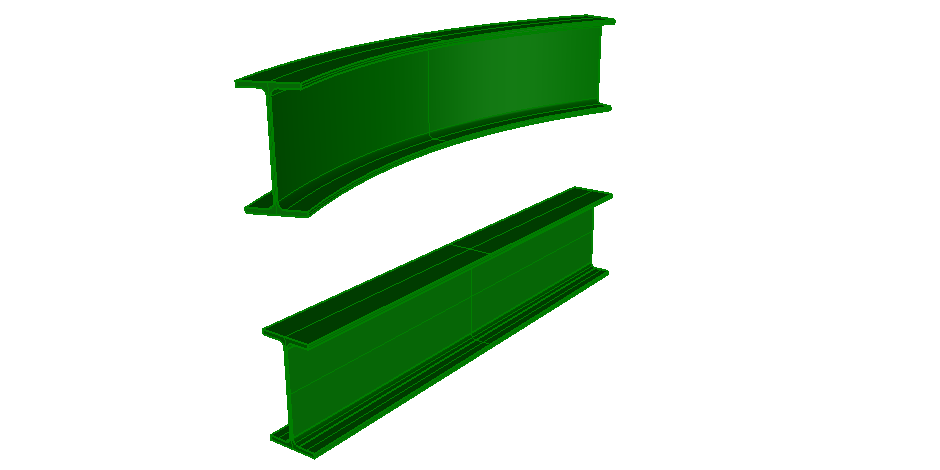

Link to this page
Link to this page| Format | ASCII | HTML |
|---|---|---|
| IFC-SPF | File | Markup |
| View |
|---|
| Common Use Definitions |
| Entity |
|---|
| IfcBeamStandardCase |
| IfcBeamType |
| IfcExtrudedAreaSolid |
| IfcRevolvedAreaSolid |
This example illustrates two standard case beams, one with an extruded area solid, the other with a revolved area solid. Figure 461 shows the resulting shape.
 |
|
Figure 461 — Standard case beams with straight and curved path. |
NOTE There is no color information within the file, the displayed color has been set by the target application as a default.